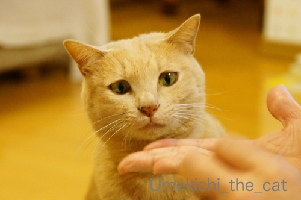
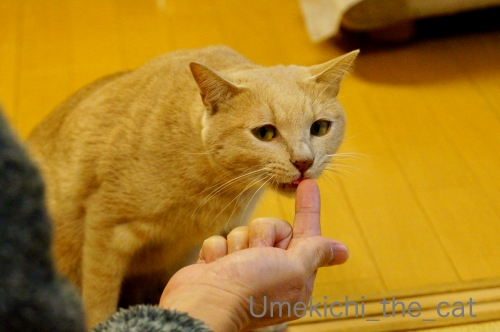
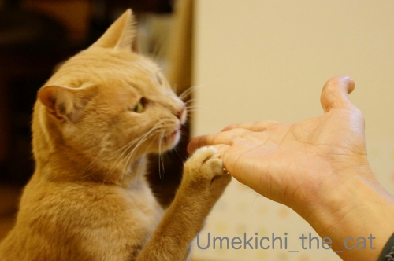
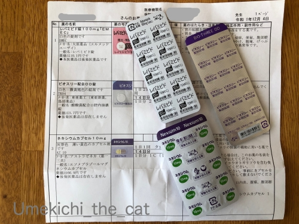
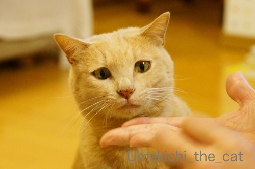
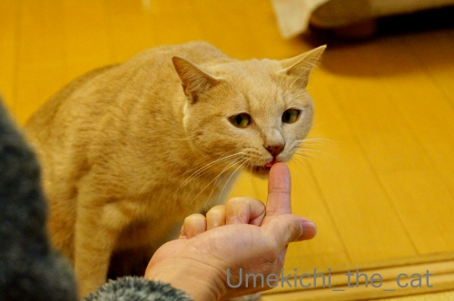
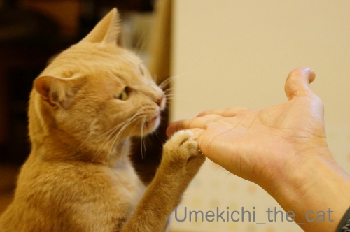
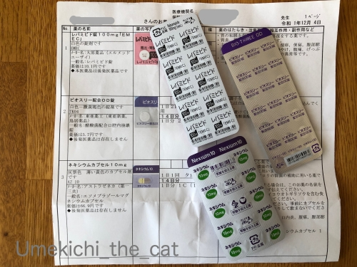

美味しくものを食べられるのは良いことだ！ [梅吉]
久しぶりの美味しい時間。
今日はマグロの加熱したものですよー＾＾

![[猫]](https://blog.ss-blog.jp/_images_e/101.gif) ええにおいは それやな
ええにおいは それやな

真剣すぎるまなざし。

待ちきれないご様子です。

ぺろっ

これはー！
おとーさんの指も一緒にがぶっ(⌒-⌒;

もっと よこすんじゃー！！
美味しいものを目の前にすると最後はやっぱりワル顔でした(^_－)☆
その梅吉ですが最近生のささみや牛肉の赤身を食べなくなしました。
加熱すると食べるんですよ。
本にゃんは
わし やせいどうぶつ ちゃうねん なまはあかん
とでも仰せなのでしょうか。
が、生でも加熱したものでも
なんでも美味しく食べられるのはとても良いことですよね！
というのも

２ヶ月ほど前に胃カメラをして「逆流性食道炎」と診断されてただいまお薬生活継続中の私。
胃カメラ検査でわかったのですが「食道裂孔ヘルニア」という状態で
「逆流性食道炎」になりやすい体のようです。
上記２つの病名の他にも「萎縮性胃炎」「表層性胃炎」と計４つの病名がついてしまった(⌒-⌒;
病名は多いですけど症状は全然深刻ではないです。よくある胃炎と言っても良いでしょう。
四つの病名をつなぎ合わせると
『胃が胃酸過多のところに食道裂孔ヘルニアのため胃酸が逆流し
食道の下部のあたりが赤く腫れてます』とのことなんです。
調子が悪くて胃カメラ検査をした前後２〜3日は
流石に食欲もなくお酒も美味しくなかったです。
40℃の熱が出てもご飯はしっかり食べてお酒も美味しく飲めるこの私がっ！！
検査後医師から言われたことは「食べ過ぎない」ことのみ。
食事＆飲酒（ここ重要w）の制限はありません。
もともと暴飲暴食はせず腹八分目を心がけていますが
腹八分目でも今の私には食べ過ぎぐらい。
五分くらいのところで食事を止めなければ胃の不快感と胃痛が・・・
その加減がうまくつかめず良くなったかな？と思って
八分目くらいを食べると調子が悪くなるの繰り返し。
それでも三歩進んで一歩下がるくらいのペースでかなり回復しております。
若い頃と同じようにお腹いっぱいはもう出来ないなーと痛感しているところですw
この先も美味しく食べ続けたいので今しっかりと治しておかなければ。

梅吉ナースからもちゃんと治すように言われております(⌒-⌒;
胃の中にポリープもあったので生検してもらいました。
胃のポリープは良性のものがほとんどなんですって。
私のポリープはもちろん良性。
ピロリ菌の検査もしてもらったのですが菌はいませんでしたよ＾＾
胃癌のリスクは極めて低いようなのでちょっと安心。
で、今回処方されたお薬の一つ「レパミピド」。
ジェネリックなのでこの名前ですがレパミピドは先発薬「ムコスタ」の主要成分です。
ムコスタ、とても一般的なお薬なので服用したことのある方もいらっしゃるかも。
先日mioさんのブログで知ったのですがこの胃薬
ドライアイ治療の点眼剤にもなるってご存知でしたか？？
胃の粘膜と目の表面の細胞に効く成分が同じっておどろきー(｣ﾟﾛﾟ)｣
最近いろんな症状で体調を崩しているブログ友の方が多いです。
季節柄皆さんもご自愛くださいね！
【追記】5:30
「痩せちゃったんじゃ？」とご心配いただいたのですが・・・
それが！今までとそんなに変わらないんですよっ！！体重w
消化が良くてカロリー高めのバナナやプリンをおやつにしてたせいかしら(⌒-⌒;
五分目も六、七と徐々に増えてきて八分目まで食べられることも多くなってきてます。
食べたかな？とおもった次の食事は量をセーブしたりして。
胃の調子と相談しながら美味しいものもちゃんと食べてまーす＾＾
 ↑ガブッと一押し↑
↑ガブッと一押し↑
今日はマグロの加熱したものですよー＾＾
真剣すぎるまなざし。

待ちきれないご様子です。

ぺろっ
おとーさんの指も一緒にがぶっ(⌒-⌒;

美味しいものを目の前にすると最後はやっぱりワル顔でした(^_－)☆
その梅吉ですが最近生のささみや牛肉の赤身を食べなくなしました。
加熱すると食べるんですよ。
本にゃんは
とでも仰せなのでしょうか。
が、生でも加熱したものでも
なんでも美味しく食べられるのはとても良いことですよね！
というのも

２ヶ月ほど前に胃カメラをして「逆流性食道炎」と診断されてただいまお薬生活継続中の私。
胃カメラ検査でわかったのですが「食道裂孔ヘルニア」という状態で
「逆流性食道炎」になりやすい体のようです。
上記２つの病名の他にも「萎縮性胃炎」「表層性胃炎」と計４つの病名がついてしまった(⌒-⌒;
病名は多いですけど症状は全然深刻ではないです。よくある胃炎と言っても良いでしょう。
四つの病名をつなぎ合わせると
『胃が胃酸過多のところに食道裂孔ヘルニアのため胃酸が逆流し
食道の下部のあたりが赤く腫れてます』とのことなんです。
調子が悪くて胃カメラ検査をした前後２〜3日は
流石に食欲もなくお酒も美味しくなかったです。
40℃の熱が出てもご飯はしっかり食べてお酒も美味しく飲めるこの私がっ！！
検査後医師から言われたことは「食べ過ぎない」ことのみ。
食事＆飲酒（ここ重要w）の制限はありません。
もともと暴飲暴食はせず腹八分目を心がけていますが
腹八分目でも今の私には食べ過ぎぐらい。
五分くらいのところで食事を止めなければ胃の不快感と胃痛が・・・
その加減がうまくつかめず良くなったかな？と思って
八分目くらいを食べると調子が悪くなるの繰り返し。
それでも三歩進んで一歩下がるくらいのペースでかなり回復しております。
若い頃と同じようにお腹いっぱいはもう出来ないなーと痛感しているところですw
この先も美味しく食べ続けたいので今しっかりと治しておかなければ。
梅吉ナースからもちゃんと治すように言われております(⌒-⌒;
胃の中にポリープもあったので生検してもらいました。
胃のポリープは良性のものがほとんどなんですって。
私のポリープはもちろん良性。
ピロリ菌の検査もしてもらったのですが菌はいませんでしたよ＾＾
胃癌のリスクは極めて低いようなのでちょっと安心。
で、今回処方されたお薬の一つ「レパミピド」。
ジェネリックなのでこの名前ですがレパミピドは先発薬「ムコスタ」の主要成分です。
ムコスタ、とても一般的なお薬なので服用したことのある方もいらっしゃるかも。
先日mioさんのブログで知ったのですがこの胃薬
ドライアイ治療の点眼剤にもなるってご存知でしたか？？
胃の粘膜と目の表面の細胞に効く成分が同じっておどろきー(｣ﾟﾛﾟ)｣
最近いろんな症状で体調を崩しているブログ友の方が多いです。
季節柄皆さんもご自愛くださいね！
【追記】5:30
「痩せちゃったんじゃ？」とご心配いただいたのですが・・・
それが！今までとそんなに変わらないんですよっ！！体重w
消化が良くてカロリー高めのバナナやプリンをおやつにしてたせいかしら(⌒-⌒;
五分目も六、七と徐々に増えてきて八分目まで食べられることも多くなってきてます。
食べたかな？とおもった次の食事は量をセーブしたりして。
胃の調子と相談しながら美味しいものもちゃんと食べてまーす＾＾

カフェオレ色の梅吉

梅吉 2023年8月10日 永眠


梅吉と出会った譲渡会

犬猫の理由なき殺処分ゼロ
妄想広告
UMEKICHI 光

爆発的に早い！
時々攻撃的！
Thanks to Mr.Boss365
爆発的に早い！
時々攻撃的！
Thanks to Mr.Boss365

私は忘年会でマグロの刺身を食べました、まいう～
「逆流性食道炎」になりやすい体なんだ。
実は私も尿管結石になりやすい体と診断されたんだよね（ﾟ□ﾟ）
胃炎も30代の頃に２回患いましたw
胃炎になったら何も言えん？みたいな（ﾟ□ﾟ）
by 英ちゃん (2019-12-23 01:24)
腹5分目ではちぃさん痩せちゃったんじゃない?
可愛い梅吉さんナースが看病してくれるのかしら。
by zombiekong (2019-12-23 01:45)
我が家では牛肉の人気がイマイチなんですよねぇ。
安い輸入肉ですけど「そんなに嫌かい？」と聞きたくなるぐらい
そっぽ向く子が多いです＾＾；
by ぽちの輔 (2019-12-23 06:39)
梅吉さんの真剣な眼差しからのガブー♪( ´▽｀)
こんな風に喜んでくれると嬉しいですねぇ＾＾
胃、これから年末年始で規則正しくない食生活が続くかもしれないので
梅吉ナースさんにしっかり看病してもらって美味しい食事を
楽しんでくださいね( ^ω^ )
by ニッキー (2019-12-23 07:07)
腹5分目だと、おなかすいて集中できそうもない。
by ニコニコファイト (2019-12-23 07:22)
私も逆流性食道炎、過去に診断されて
薬飲んでましたよ。
独特の胃のむかつき感があったなぁ。
食欲と適量をうまく折り合いつけるしかないよねー(^_^;)
by よーちゃん (2019-12-23 07:26)
美味しいものをガン見している梅吉さん、ちょっと切なげな眼差しにも見えますよー。もちろん最後はバッチリのワル顔。これがキメ顔ですよねっ^^v
あらー、たくさんの病名が(@_@)
クリスマスのごちそうは無理かな。私は全然無理（ ; ; ）
お正月に向けて直さないとね！
私はお正月に治ってしまうと、美味しいものを仕込む余裕もないので、このままの方が良いかも(笑)
お互いお大事にです。
by ChatBleu (2019-12-23 07:30)
梅吉さん♪夢中ですね(#^.^#)
火を通したものの方が香りが強くなる？？
私は毎回、人間ドッグの胃カメラで
表層胃炎と軽い逆流性食道炎と
言われてます(;^_^A
今のところ症状が無いので薬も何も無しですが！
腹八分目・・・お正月は
食べ過ぎになる傾向があるので
注意したいです！
by きぃ (2019-12-23 08:11)
食べ過ぎに注意ですか！
昨日から食べ過ぎています(^ ^)
by ma2ma2 (2019-12-23 09:16)
梅吉さんの夢中なちょっと寄り目がかわいい～(#^^#)
何でも美味しく食べるのはしあわせですね♪
あらら、見覚えのあるお薬！私も少し前に同じものを飲んでいました^^
受けた注意は食べすぎNGと食後すぐ寝るな^^;
健康診断でバリウム飲むと毎回「多発性ポリープ」で引っかかるのが面倒で、最近は最初からカメラ飲みますが、同じく良性で異常なし。
こてつ同様私も食いしん坊。
自分の胃とうまく付き合いながら美味しいお酒も飲みたいなと思ってます^^
by ゆきち (2019-12-23 12:16)
こんにちは。
梅吉君、耐えてますね。眼視の良い表情です（笑）
間違って噛まれる事ありますが、結構痛いです。
小生猫、ささみ肉を食べないですね。
マグロ・カツオが好みで、牛肉は食べさせた事ないかな？
「逆流性食道炎」小生母がなりました。現在は改善・全く問題ない感じです。
小生も「胃もたれする事」を防御ですが、腹八分目・腹七分目ぐらいにしています。
「五分くらい」の加減も難しそうですが・・・
刺激物ある食べ物は多少控えた方が良さそうです。姿勢もあるみたい？
ポジティブ思考なので、ちぃさんなら大丈夫と思います。
楽しみながら？踏ん張って下さい。！？(=^･ｪ･^=)
by Boss365 (2019-12-23 12:24)
梅ちゃんｗｗほしくてより目っぽくなってますね♪
かわいいなぁ❤
やっぱり生より加熱したもののほうがいい気がします。
うちはそういうものには興味を示さず、もっぱら甘いものｗ
今は食事療養中ですし、カリカリ以外禁止ですが
ちっとも痩せないのはなぜ？(≧∇≦)ﾉ彡 ﾊﾞﾝﾊﾞﾝ!
ムコスタ、レパミピド、聞いたことがあります。
病院でもらったことあるからでしょーね＾＾
胃はわりと丈夫ですが、呼吸器系がダメな私．．．
さすがに４０℃超すと食欲どころじゃないですが
ちぃさんさすがです！！
何はともあれ、お大事になさってくださいませ。
年末年始の暴飲暴食にはご用心(ΦωΦ)ふふふ
by カトリーヌ (2019-12-23 14:02)
胃の調子が早くよくなりますようにっ☆
心配しないで美味しいもの、好きなもの
食べたり飲んだり、いつまでもしたいですもんねっ！
お大事にっ♪
by yuppie (2019-12-23 14:02)
梅吉くんの真剣なより目が可愛すぎる～♪
待ちきれなくておてても出ちゃって。
でももっとよこすんじゃ～の写真。「大好きにゃ♪」にも見えない？(≧▽≦)
お目目うっとりｗ
クリスマスに年末年始。
美味しいものを前にして、腹八分目は辛いけど。
梅吉ナースのご指導とお薬でよくなるといいね。
by emi (2019-12-23 15:07)
いやはや、みんな体調不良だー^^;
2020年は元気にいきますわよ！！！
ムコスタは、点眼薬で処方されてます。
そう。ドライアイ^^
レバミピド錠も胃炎のときに処方されていたなーって思い出しました。
逆流性食道炎だったとき、わたしはタケプロンだったわ。
薬を飲まないで暮らせることが一番幸せだよね。
ちぃさんも症状が改善しますように^^
梅吉くん、ひきつづき、ちぃさんのことは任せたぞ！
by リュカ (2019-12-23 16:59)
梅吉さん、美味しいものに真剣な目つき、可愛い～＾＾
生を食べなくなったのは、大人になったから用心深くなった？とか。
うちの歴代猫の好みは色々で、みゅんはカリカリが好きで、人間が食べるものにはめったに関心を示さなかったな～全然どろぼーしようとしないので楽だったけど、あげようとしても喜ばない＾＾；
すっごい病名たくさん‥
あまり痩せないというのは、量はそれで丁度いいということなのかしら？
様子見ながら、美味しくいただきましょう＾＾
by sana (2019-12-23 20:05)
私は「胃の口が緩い」そうで(ｰｰ;)
逆流性食道炎になりやすいから、食べてすぐ横にならないで、と
言われています。
爺は立派な逆流性食道炎なので、遺伝かなぁと思ったり…。
by も〜 (2019-12-23 20:18)
お久しぶりです！！
私も食道が焼けるような感覚がしばし続いていたのですけど元看護士のおばとの会話の中で物を飲食後1時間ぐらい横にならなかったら治るよ！！
と言われ試しにやってみたら焼けた感じはなくなりました！！
でも最近又不摂生で・・・焼ける~(;´∀｀)
by 50oyaji (2019-12-23 20:51)
マグロを真剣に見てますね（笑）
美味しいのが一番、梅吉さんは美食家！
ちょっとの加熱って、私も好きです。
半生物や燻製もの美味しいですね梅吉さん！
ちぃさんは気をつけてください。
夫は腰が痛いと整形外科でブロック注射をしたあとに吐血、胃潰瘍でした。
胃潰瘍は夫と一番縁遠い病名（笑）
ピロリ菌のイタズラでした。
それから3年、夫は検査をするたびに内臓がきれいになっていってます。
検査は用心になって良いような気がしますが、
私は、何もしてません（笑）
本当に大事にされてください。
年末年始、北海道に帰られても暴飲暴食は封印しましょう（笑）
by kiki (2019-12-23 22:05)
梅吉さん、寄り目になってますね！！
かなりお気に入りなのかな？ ^^)
胃の調子、腹5分でとどめるのは辛いですね。
って、腹5分目ってどのくらいなんだろう？？
あまり深く考えたことがありません。。。
ともあれお大事になさってください。
by yes_hama (2019-12-23 22:07)
梅吉さんは生臭さがお嫌いなのかな？
でも周りを焼いて中はレアのマグロも美味しそうですよね(笑)
どうぞ胃の具合が安定しますように(^^♪
by yamatonosuke (2019-12-24 01:53)
「食道裂孔ヘルニア」「逆流性食道炎」数年前に自分もこう診断されてしばらく薬を飲んでいました。これは回復は難しいと言われながらも症状は治まり、今は薬も飲んでいません。
食後、すぐに横にならないが最適の治療方法なんでしょうか(^_^;)
梅吉さん、美味しい食べ物には敏感ですね！人間も同じですよね・・・。
by kou (2019-12-24 07:16)
すごい病名ですね。お元気そうではありますが
くれぐれもお大事になさってください。
「飲酒の制限なし」←これは最重要ｗｗ
わたしは高熱が出ると飲めません。お酒を
おいしく頂くには健康第一ですね！
by mio (2019-12-24 08:20)
ホント健康第一！
うちのニャンコらも生は食べません、つうか見向きもしません。
焼き魚の日はお鼻すんすんしてハイになります＾＾
by じゅらまろ (2019-12-24 11:08)
ちょっと寄り目がかわいい(≧▽≦)
by palpal (2019-12-24 21:03)
(*ﾟ∀)ﾉ.｡･:メリークリスマス*:･ﾟ`☆､｡･:*:･ﾟ`★.･ﾟ
(((*★*プレゼント*★*)))ﾍ(･_･ﾍ).∠(o･_･)/由
by 英ちゃん (2019-12-24 22:07)
☆彡メリークリスマス☆彡
梅吉さん、生はあかんのですね(^^
大好物を目の前にするとかなり野性味あふれる眼差しになりますねｗ
さておかーさんの逆流性食道炎！なりやすい体質というのがあるのですか。
私もアニサキスアレルギー症状が怖くて大好きなお刺身を封印しています。
加熱した鮭も危ないので粕汁にはほんの少ししか入れません。食べたい衝動に
駆られて食べるとやはり調子が悪くなります。
腹八分目すら守れていないので、腹五分は私にとってはつらすぎ過ぎます。
胃のあたりに不快感があると気持ちもドヨンとなりますね。
美味しいものを少しだけ生活♪ 美味しいと感じることができるって幸せ(^^
by marimo (2019-12-25 11:18)